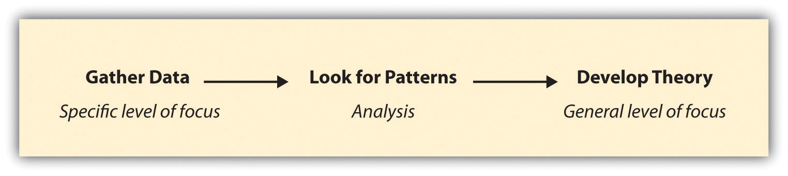
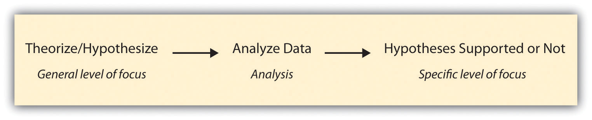
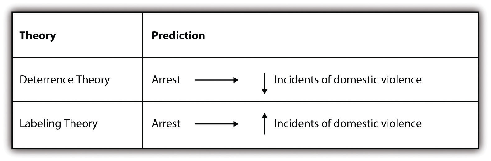
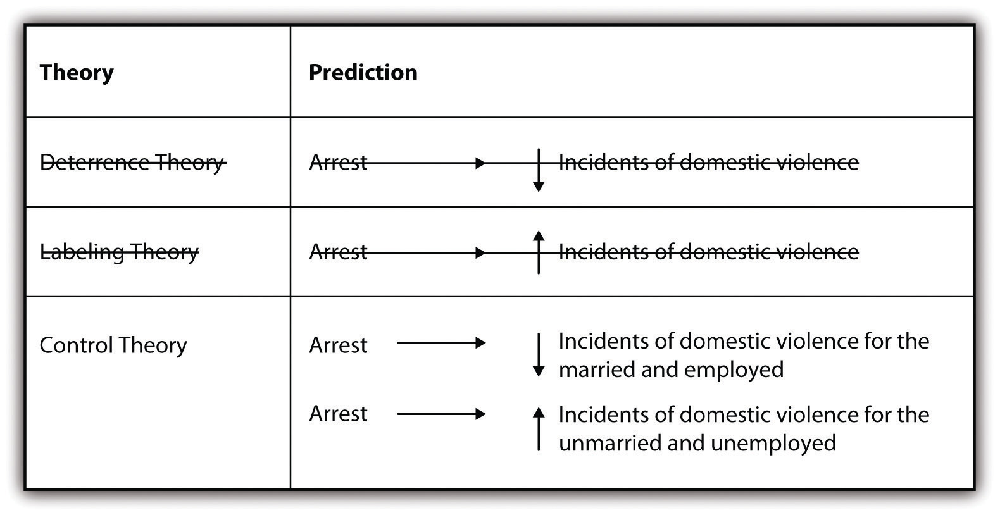

Although “what’s theory got to do with it” doesn’t quite roll off the tongue in the way that Tina Turner’s 1980s hit “What’s Love Got to Do With It” does, it is nevertheless just as important a question.Perhaps not everyone will be compelled by this reference to a hit of the 1980s. For those who have no clue who Tina Turner is, let me first say, “Seriously?!” and secondly, I highly recommend that you check out the following: http://www.dailymotion.com/video/x1o87v_tina-turner-what-s-love-got-to-do-w_music. In this chapter, we’ll explore the connections between paradigms, social theories, and social scientific research methods. We’ll also consider how one’s analytic, paradigmatic, and theoretical perspective might shape or be shaped by her or his methodological choices. In short, we’ll answer the question of what theory has to do with research methods.
Before we discuss the more specific details of paradigms and theories, let’s look broadly at three possible levels of inquiry on which social scientific investigations might be based. These three levels demonstrate that while sociologists share some common beliefs about the value of investigating and understanding human interaction, at what level they investigate that interaction will vary.
At the micro level, sociologists examine the smallest levels of interaction; even in some cases, just “the self” alone. Microlevel analyses might include one-on-one interactions between couples or friends. Or perhaps a sociologist is interested in how a person’s perception of self is influenced by his or her social context. In each of these cases, the level of inquiry is micro. When sociologists investigate groups, their inquiry is at the meso level. Sociologists who conduct mesolevel research might study how norms of workplace behavior vary across professions or how children’s sporting clubs are organized, to cite two examples. At the macro level, sociologists examine social structures and institutions. Research at the macro level examines large-scale patterns. In recent years, sociologists have become increasingly interested in the process and impacts of globalization. A study of globalization that examines the interrelationships between nations would be an example of a macrolevel study.
Let’s take a closer look at some specific examples of sociological research to better understand each of the three levels of inquiry described previously. Some topics are best suited to be examined at one particular level, while other topics can be studied at each of the three different levels. The particular level of inquiry might shape a sociologist’s questions about the topic, or a sociologist might view the topic from different angles depending on the level of inquiry being employed.
First let’s consider some examples of different topics that are best suited to a particular level of inquiry. Work by Stephen Marks offers an excellent example of research at the microAn analytic framework focusing on the smallest levels of interaction. level. In one study, Marks and Shelley MacDermid (1996)Marks, S. R., & MacDermid, S. M. (1996). Multiple roles and the self: A theory of role balance. Journal of Marriage and the Family, 58, 417–432. draw from prior microlevel theories to empirically study how people balance their roles and identities. In this study, the researchers found that people who experience balance across their multiple roles and activities report lower levels of depression and higher levels of self-esteem and well-being than their less-balanced counterparts. In another study, Marks and colleagues examined the conditions under which husbands and wives feel the most balance across their many roles. They found that different factors are important for different genders. For women, having more paid work hours and more couple time were among the most important factors. For men, having leisure time with their nuclear families was important, and role balance decreased as work hours increased (Marks, Huston, Johnson, & MacDermid, 2001).Marks, S. R., Huston, T. L., Johnson, E. M., & MacDermid, S. M. (2001). Role balance among white married couples. Journal of Marriage and the Family, 63, 1083–1098. Both of these studies fall within the category of microlevel analysis.
At the mesoAn analytic framework focusing on group interactions. level, sociologists tend to study the experiences of groups and the interactions between groups. In a recent book based on their research with Somali immigrants, Kim Huisman and colleagues (Huisman, Hough, Langellier, & Toner, 2011)Huisman, K. A., Hough, M., Langellier, K. M., & Toner, C. N. (2011). Somalis in Maine: Crossing cultural currents. New York, NY: Random House. examine the interactions between Somalis and Americans in Maine. These researchers found that stereotypes about refugees being unable or unwilling to assimilate and being overly dependent on local social systems are unsubstantiated. In a much different study of group-level interactions, Michael Messner (2009)Messner, M. A. (2009). It’s all for the kids: Gender, families, and youth sports. Berkeley, CA: University of California Press. conducted research on children’s sports leagues. Messner studied interactions among parent volunteers, among youth participants, and between league organizers and parents and found that gender boundaries and hierarchies are perpetuated by the adults who run such leagues. These two studies, while very different in their specific points of focus, have in common their mesolevel focus.
Sociologists who conduct macroAn analytic framework focusing on large-scale patterns across social structures or institutions.level research study interactions at the broadest level, such as interactions between nations or comparisons across nations. One example of macrolevel research can be seen in a recent article by David Frank and colleagues (Frank, Camp, & Boutcher, 2010).Frank, D., Camp, B., & Boutcher, S. (2010). Worldwide trends in the criminal regulation of sex, 1945–2005. American Sociological Review, 75, 867–893. These researchers examined worldwide changes over time in laws regulating sex. By comparing laws across a number of countries over a period of many years (1945–2005), Frank learned that laws regulating rape, adultery, sodomy, and child sexual abuse shifted in focus from protecting larger entities, such as families, to protecting individuals. In another macrolevel study, Leah Ruppanner (2010)Ruppanner, L. E. (2010). Cross-national reports of housework: An investigation of the gender empowerment measure. Social Science Research, 39, 963–975. studied how national levels of gender equality in 25 different countries affect couples’ divisions of housework. Ruppanner found, among other patterns, that as women’s parliamentary representation increases, so, too, does men’s participation in housework.
While it is true that some topics lend themselves to a particular level of inquiry, there are many topics that could be studied from any of the three levels. The choice depends on the specific interest of the researcher, the approach he or she would like to take, and the sorts of questions he or she wants to be able to answer about the topic. Let’s look at an example. Gang activity has been a topic of interest to sociologists for many years and has been studied from each of the levels of inquiry described here. At the micro level, sociologists might study the inner workings of a specific gang, communication styles, and what everyday life is like for gang members. Though not written by a sociologist, one example of a microlevel analysis of gang activity can be found in Sanyika Shakur’s 1993 autobiography, Monster.Shakur, S. (1993). Monster: The autobiography of an L.A. gang member. New York, NY: Atlantic Monthly Press. In his book, Shakur describes his former day-to-day life as a member of the Crips in south-central Los Angeles. Shakur’s recounting of experiences highlights microlevel interactions between himself, fellow Crips members, and other gangs.
At the meso level, sociologists are likely to examine interactions between gangs or perhaps how different branches of the same gang vary from one area to the next. At the macro level, we could compare the impact of gang activity across communities or examine the economic impact of gangs on nations. Excellent examples of gang research at all three levels of analysis can be found in the Journal of Gang Research published by the National Gang Crime Research Center (NGCRC).The Journal of Gang Research is the official publication of the National Gang Crime Research Center (NGCRC). You can learn more about the NGCRC and the journal at http://www.ngcrc.com. Sudir Venkatesh’s study (2008),Venkatesh, S. (2008). Gang leader for a day: A rogue sociologist takes to the streets. New York, NY: Penguin Group. Gang Leader for a Day, is an example of research on gangs that utilizes all three levels of analysis. Venkatesh conducted participant observation with a gang in Chicago. He learned about the everyday lives of gang members (micro) and how the gang he studied interacted with and fit within the landscape of other gang “franchises” (meso). In addition, Venkatesh described the impact of the gang on the broader community and economy (macro).
The terms paradigm and theory are often used interchangeably in social science, although social scientists do not always agree whether these are identical or distinct concepts. In this text, we will make a slight distinction between the two ideas because thinking about each concept as analytically distinct provides a useful framework for understanding the connections between research methods and social scientific ways of thinking.
For our purposes, we’ll define paradigmAn analytic lens, a way of viewing the world, and a framework from which to understand the human experience. as an analytic lens, a way of viewing the world and a framework from which to understand the human experience (Kuhn, 1962).See Kuhn’s seminal work for more on paradigms: Kuhn, T. (1962). The structure of scientific revolutions. Chicago, IL: University of Chicago Press. It can be difficult to fully grasp the idea of paradigmatic assumptions because we are very ingrained in our own, personal everyday way of thinking. For example, let’s look at people’s views on abortion. To some, abortion is a medical procedure that should be undertaken at the discretion of each individual woman who might experience an unwanted pregnancy. To others, abortion is murder and members of society should collectively have the right to decide when, if at all, abortion should be undertaken. Chances are, if you have an opinion about this topic you are pretty certain about the veracity of your perspective. Then again, the person who sits next to you in class may have a very different opinion and yet be equally confident about the truth of his or her perspective. Which of you is correct? You are each operating under a set of assumptions about the way the world does—or at least should—work. Perhaps your assumptions come from your particular political perspective, which helps shape your view on a variety of social issues, or perhaps your assumptions are based on what you learned from your parents or in church. In any case, there is a paradigm that shapes your stance on the issue.
In Chapter 1 "Introduction" we discussed the various ways that we know what we know. Paradigms are a way of framing what we know, what we can know, and how we can know it. In social science, there are several predominant paradigms, each with its own unique ontological and epistemological perspective. Let’s look at four of the most common social scientific paradigms that might guide you as you begin to think about conducting research.
The first paradigm we’ll consider, called positivismA paradigm guided by the principles of objectivity, knowability, and deductive logic., is probably the framework that comes to mind for many of you when you think of science. Positivism is guided by the principles of objectivity, knowability, and deductive logic. Deductive logic is discussed in more detail in the section that follows. Auguste Comte, whom you might recall from your introduction to sociology class as the person who coined the term sociology, argued that sociology should be a positivist science (Ritzer & Goodman, 2004).Ritzer, G., & Goodman, D. J. (2004). Classical sociological theory (4th ed.). New York, NY: McGraw-Hill. The positivist framework operates from the assumption that society can and should be studied empirically and scientifically. Positivism also calls for a value-free sociologyA perspective associated with positivism. Posits that sociologists should set their personal opinions and beliefs aside in favor of pursuing objective truth., one in which researchers aim to abandon their biases and values in a quest for objective, empirical, and knowable truth.
Another predominant paradigm in sociology is social constructionismA paradigm that argues that we create reality through our interactions and our interpretations of those interactions.. Peter Berger and Thomas Luckman (1966)Berger, P. L., & Luckman, T. (1966). The social construction of reality: A treatise in the sociology of knowledge. New York, NY: Doubleday. are credited by many for having developed this perspective in sociology. While positivists seek “the truth,” the social constructionist framework posits that “truth” is a varying, socially constructed, and ever-changing notion. This is because we, according to this paradigm, create reality ourselves (as opposed to it simply existing and us working to discover it) through our interactions and our interpretations of those interactions. Key to the social constructionist perspective is the idea that social context and interaction frame our realities. Researchers operating within this framework take keen interest in how people come to socially agree, or disagree, about what is real and true. Consideration of how meanings of different hand gestures vary across different regions of the world aptly demonstrates that meanings are constructed socially and collectively. Think about what it means to you when you see a person raise his or her middle finger. We probably all know that person isn’t very happy (nor is the person to whom the finger is being directed). In some societies, it is another gesture, the thumbs up, that raises eyebrows. While the thumbs up may have a particular meaning in our culture, that meaning is not shared across cultures (Wong, 2007).For more about how the meanings of hand gestures vary by region, you might read the following blog entry: Wong, W. (2007). The top 10 hand gestures you’d better get right. Retrieved from http://www.languagetrainers.co.uk/blog/2007/09/24/top-10-hand-gestures
It would be a mistake to think of the social constructionist perspective as only individualistic. While individuals may construct their own realities, groups—from a small one such as a married couple to large ones such as nations—often agree on notions of what is true and what “is.” In other words, the meanings that we construct have power beyond the individual people who create them. Therefore, the ways that people work to change such meanings is of as much interest to social constructionists as how they were created in the first place.
A third paradigm is the critical paradigmA paradigm that focuses on how power, inequality, and social change shape the human experience.. At its core, the critical paradigm is focused on power, inequality, and social change. Although some rather diverse perspectives are included here, the critical paradigm, in general, includes ideas developed by early social theorists, such as Max Horkheimer (Calhoun, Gerteis, Moody, Pfaff, & Virk),Calhoun, C., Gerteis, J., Moody, J., Pfaff, S., & Virk, I. (Eds.). (2007). Classical sociological theory (2nd ed.). Malden, MA: Blackwell. and later works developed by feminist scholars, such as Nancy Fraser (1989).Fraser, N. (1989). Unruly practices: Power, discourse, and gender in cotemporary social theory. Minneapolis, MN: University of Minnesota Press. Unlike the positivist paradigm, the critical paradigm posits that social science can never be truly objective or value-free. Further, this paradigm operates from the perspective that scientific investigation should be conducted with the express goal of social change in mind.
Finally, postmodernismA paradigm that challenges most social scientific ways of knowing, arguing that there are no universals. is a paradigm that challenges almost every way of knowing that many social scientists take for granted (Best & Kellner, 1991).Best, S., & Kellner, D. (1991). Postmodern theory: Critical interrogations. New York, NY: Guilford. While positivists claim that there is an objective, knowable truth, postmodernists would say that there is not. While social constructionists may argue that truth is in the eye of the beholder (or in the eye of the group that agrees on it), postmodernists may claim that we can never really know such truth because, in the studying and reporting of others’ truths, the researcher stamps her or his own truth on the investigation. Finally, while the critical paradigm may argue that power, inequality, and change shape reality and truth, a postmodernist may in turn ask, whose power, whose inequality, whose change, whose reality, and whose truth? As you might imagine, the postmodernist paradigm poses quite a challenge for social scientific researchers. How does one study something that may or may not be real or that is only real in your current and unique experience of it? This fascinating question is worth pondering as you begin to think about conducting your own sociological research. Table 2.1 "Social Scientific Paradigms" summarizes each of the paradigms discussed here.
Table 2.1 Social Scientific Paradigms
| Paradigm | Emphasis | Assumption |
|---|---|---|
| Positivism | Objectivity, knowability, and deductive logic | Society can and should be studied empirically and scientifically. |
| Social constructionism | Truth as varying, socially constructed, and ever-changing | Reality is created collectively and that social context and interaction frame our realities. |
| Critical | Power, inequality, and social change | Social science can never be truly value-free and should be conducted with the express goal of social change in mind. |
| Postmodernism | Inherent problems with previous paradigms | Truth in any form may or may not be knowable. |
Much like paradigms, theories provide a way of looking at the world and of understanding human interaction. Like paradigms, theories can be sweeping in their coverage. Some sociological theories, for example, aim to explain the very existence and continuation of society as we know it. Unlike paradigms, however, theories might be narrower in focus, perhaps just aiming to understand one particular phenomenon, without attempting to tackle a broader level of explanation. In a nutshell, theoryA way of explanation, a mapping out of the why and how of the social phenomenon being studied. might be thought of as a way of explanation or as “an explanatory statement that fits the evidence” (Quammen, 2004).Quammen, D. (2004, November). Was Darwin wrong? National Geographic, pp. 2–35. At their core, theories can be used to provide explanations of any number or variety of phenomena. They help us answer the “why” questions we often have about the patterns we observe in social life. Theories also often help us answer our “how” questions. While paradigms may point us in a particular direction with respect to our “why” questions, theories more specifically map out the explanation, or the “how,” behind the “why.”
Introductory sociology textbooks typically teach students about “the big three” sociological theories—structural functionalism, conflict theory, and symbolic interactionism (Barkan, 2011; Henslin, 2010).The theory discussions in each of the following texts provide useful examples: [citation redacted per publisher request]; Henslin, J. M. (2010). Sociology: A down to earth approach, core concepts (4th ed.). Boston, MA: Pearson. Most also mention at least a few additional theories or theorists (Sprague, 1997).See Sprague’s 1997 critique of social theory for a compelling and well-developed argument in favor of sociology reorganizing theory with the aim of increasing its relevance to social life today and bridging, rather than building, boundaries across diverse perspectives and disciplines: Sprague, J. (1997). Holy men and big guns: The can[n]on in social theory. Gender & Society, 11, 88–107. As you probably recall from your introductory sociology course, structural functionalists focus on the interrelations between various parts of society and how each part works with the others to make society function in the way that it does. Conflict theorists are interested in questions of power and who wins and who loses based on the way that society is organized. Finally, symbolic interactionists focus on how meaning is created and negotiated though meaningful (i.e., symbolic) interactions. Just as researchers might examine the same topic from different levels of inquiry, so, too, could they investigate the same topic from different theoretical perspectives. In this case, even their research questions could be the same, but the way they make sense of whatever phenomenon it is they are investigating will be shaped in large part by the theoretical assumptions that lie behind their investigation.
Table 2.2 "Sociological Theories and the Study of Sport" summarizes the major points of focus for each of major three theories and outlines how a researcher might approach the study of the same topic, in this case the study of sport, from each of the three perspectives.
Table 2.2 Sociological Theories and the Study of Sport
| Paradigm | Focuses on | A study of sport might examine |
|---|---|---|
| Structural functionalism | Interrelations between parts of society; how parts work together | Positive, negative, intended, and unintended consequences of professional sport leagues |
| Conflict theory | Who wins and who loses based on the way that society is organized | Issues of power in sport such as differences in access to and participation in sport |
| Symbolic interactionism | How meaning is created and negotiated though interactions | How the rules of sport of are constructed, taught, and learned |
Within each area of specialization in sociology, there are many other theories that aim to explain more specific types of interactions. For example, within the sociological study of sexual harassment, different theories posit different explanations for why harassment occurs. One theory, first developed by criminologists, is called routine activities theory. It posits that sexual harassment is most likely to occur when a workplace lacks unified groups and when potentially vulnerable targets and motivated offenders are both present (DeCoster, Estes, & Mueller, 1999).DeCoster, S., Estes, S. B., & Mueller, C. W. (1999). Routine activities and sexual harassment in the workplace. Work and Occupations, 26, 21–49. Other theories of sexual harassment, called relational theories, suggest that a person’s relationships, such as their marriages or friendships, are the key to understanding why and how workplace sexual harassment occurs and how people will respond to it when it does occur (Morgan, 1999).Morgan, P. A. (1999). Risking relationships: Understanding the litigation choices of sexually harassed women. The Law and Society Review, 33, 201–226. Relational theories focus on the power that different social relationships provide (e.g., married people who have supportive partners at home might be more likely than those who lack support at home to report sexual harassment when it occurs). Finally, feminist theories of sexual harassment take a different stance. These theories posit that the way our current gender system is organized, where those who are the most masculine have the most power, best explains why and how workplace sexual harassment occurs (MacKinnon, 1979).MacKinnon, C. 1979. Sexual harassment of working women: A case of sex discrimination. New Haven, CT: Yale University Press. As you might imagine, which theory a researcher applies to examine the topic of sexual harassment will shape the questions the researcher asks about harassment. It will also shape the explanations the researcher provides for why harassment occurs.
Feeling confused about the social constructionism paradigm? Check out the 10-minute lecture that illustrates this framework online at: http://www.youtube.com/v/GVVWmZAStn8.
After watching this lecture, come up with a two- to four-sentence description of social constructionism that would make sense to someone who has no background in sociological theory.
Theories structure and inform sociological research. So, too, does research structure and inform theory. The reciprocal relationship between theory and research often becomes evident to students new to these topics when they consider the relationships between theory and research in inductive and deductive approaches to research. In both cases, theory is crucial. But the relationship between theory and research differs for each approach. Inductive and deductive approaches to research are quite different, but they can also be complementary. Let’s start by looking at each one and how they differ from one another. Then we’ll move on to thinking about how they complement one another.
In an inductive approachCollect data, analyze patterns in the data, and then theorize from the data. to research, a researcher begins by collecting data that is relevant to his or her topic of interest. Once a substantial amount of data have been collected, the researcher will then take a breather from data collection, stepping back to get a bird’s eye view of her data. At this stage, the researcher looks for patterns in the data, working to develop a theory that could explain those patterns. Thus when researchers take an inductive approach, they start with a set of observations and then they move from those particular experiences to a more general set of propositions about those experiences. In other words, they move from data to theory, or from the specific to the general. Figure 2.5 "Inductive Research" outlines the steps involved with an inductive approach to research.
Figure 2.5 Inductive Research
There are many good examples of inductive research, but we’ll look at just a few here. One fascinating recent study in which the researchers took an inductive approach was Katherine Allen, Christine Kaestle, and Abbie Goldberg’s study (2011)Allen, K. R., Kaestle, C. E., & Goldberg, A. E. (2011). More than just a punctuation mark: How boys and young men learn about menstruation. Journal of Family Issues, 32, 129–156. of how boys and young men learn about menstruation. To understand this process, Allen and her colleagues analyzed the written narratives of 23 young men in which the men described how they learned about menstruation, what they thought of it when they first learned about it, and what they think of it now. By looking for patterns across all 23 men’s narratives, the researchers were able to develop a general theory of how boys and young men learn about this aspect of girls’ and women’s biology. They conclude that sisters play an important role in boys’ early understanding of menstruation, that menstruation makes boys feel somewhat separated from girls, and that as they enter young adulthood and form romantic relationships, young men develop more mature attitudes about menstruation.
In another inductive study, Kristin Ferguson and colleagues (Ferguson, Kim, & McCoy, 2011)Ferguson, K. M., Kim, M. A., & McCoy, S. (2011). Enhancing empowerment and leadership among homeless youth in agency and community settings: A grounded theory approach. Child and Adolescent Social Work Journal, 28, 1–22. analyzed empirical data to better understand how best to meet the needs of young people who are homeless. The authors analyzed data from focus groups with 20 young people at a homeless shelter. From these data they developed a set of recommendations for those interested in applied interventions that serve homeless youth. The researchers also developed hypotheses for people who might wish to conduct further investigation of the topic. Though Ferguson and her colleagues did not test the hypotheses that they developed from their analysis, their study ends where most deductive investigations begin: with a set of testable hypotheses.
Researchers taking a deductive approachDevelop hypotheses based on some theory or theories, collect data that can be used to test the hypotheses, and assess whether the data collected support the hypotheses. take the steps described earlier for inductive research and reverse their order. They start with a social theory that they find compelling and then test its implications with data. That is, they move from a more general level to a more specific one. A deductive approach to research is the one that people typically associate with scientific investigation. The researcher studies what others have done, reads existing theories of whatever phenomenon he or she is studying, and then tests hypotheses that emerge from those theories. Figure 2.6 "Deductive Research" outlines the steps involved with a deductive approach to research.
Figure 2.6 Deductive Research
While not all researchers follow a deductive approach, as you have seen in the preceding discussion, many do, and there are a number of excellent recent examples of deductive research. We’ll take a look at a couple of those next.
In a study of US law enforcement responses to hate crimes, Ryan King and colleagues (King, Messner, & Baller, 2009)King, R. D., Messner, S. F., & Baller, R. D. (2009). Contemporary hate crimes, law enforcement, and the legacy of racial violence. American Sociological Review, 74, 291–315. hypothesized that law enforcement’s response would be less vigorous in areas of the country that had a stronger history of racial violence. The authors developed their hypothesis from their reading of prior research and theories on the topic. Next, they tested the hypothesis by analyzing data on states’ lynching histories and hate crime responses. Overall, the authors found support for their hypothesis.
In another recent deductive study, Melissa Milkie and Catharine Warner (2011)Milkie, M. A., & Warner, C. H. (2011). Classroom learning environments and the mental health of first grade children. Journal of Health and Social Behavior, 52, 4–22. studied the effects of different classroom environments on first graders’ mental health. Based on prior research and theory, Milkie and Warner hypothesized that negative classroom features, such as a lack of basic supplies and even heat, would be associated with emotional and behavioral problems in children. The researchers found support for their hypothesis, demonstrating that policymakers should probably be paying more attention to the mental health outcomes of children’s school experiences, just as they track academic outcomes (American Sociological Association, 2011).The American Sociological Association wrote a press release on Milkie and Warner’s findings: American Sociological Association. (2011). Study: Negative classroom environment adversely affects children’s mental health. Retrieved from http://asanet.org/press/Negative_Classroom_Environment_Adversely_Affects_Childs_Mental_Health.cfm
While inductive and deductive approaches to research seem quite different, they can actually be rather complementary. In some cases, researchers will plan for their research to include multiple components, one inductive and the other deductive. In other cases, a researcher might begin a study with the plan to only conduct either inductive or deductive research, but then he or she discovers along the way that the other approach is needed to help illuminate findings. Here is an example of each such case.
In the case of my collaborative research on sexual harassment, we began the study knowing that we would like to take both a deductive and an inductive approach in our work. We therefore administered a quantitative survey, the responses to which we could analyze in order to test hypotheses, and also conducted qualitative interviews with a number of the survey participants. The survey data were well suited to a deductive approach; we could analyze those data to test hypotheses that were generated based on theories of harassment. The interview data were well suited to an inductive approach; we looked for patterns across the interviews and then tried to make sense of those patterns by theorizing about them.
For one paper (Uggen & Blackstone, 2004),Uggen, C., & Blackstone, A. (2004). Sexual harassment as a gendered expression of power. American Sociological Review, 69, 64–92. we began with a prominent feminist theory of the sexual harassment of adult women and developed a set of hypotheses outlining how we expected the theory to apply in the case of younger women’s and men’s harassment experiences. We then tested our hypotheses by analyzing the survey data. In general, we found support for the theory that posited that the current gender system, in which heteronormative men wield the most power in the workplace, explained workplace sexual harassment—not just of adult women but of younger women and men as well. In a more recent paper (Blackstone, Houle, & Uggen, 2006),Blackstone, A., Houle, J., & Uggen, C. “At the time I thought it was great”: Age, experience, and workers’ perceptions of sexual harassment. Presented at the 2006 meetings of the American Sociological Association. Currently under review. we did not hypothesize about what we might find but instead inductively analyzed the interview data, looking for patterns that might tell us something about how or whether workers’ perceptions of harassment change as they age and gain workplace experience. From this analysis, we determined that workers’ perceptions of harassment did indeed shift as they gained experience and that their later definitions of harassment were more stringent than those they held during adolescence. Overall, our desire to understand young workers’ harassment experiences fully—in terms of their objective workplace experiences, their perceptions of those experiences, and their stories of their experiences—led us to adopt both deductive and inductive approaches in the work.
Researchers may not always set out to employ both approaches in their work but sometimes find that their use of one approach leads them to the other. One such example is described eloquently in Russell Schutt’s Investigating the Social World (2006).Schutt, R. K. (2006). Investigating the social world: The process and practice of research. Thousand Oaks, CA: Pine Forge Press. As Schutt describes, researchers Lawrence Sherman and Richard Berk (1984)Sherman, L. W., & Berk, R. A. (1984). The specific deterrent effects of arrest for domestic assault. American Sociological Review, 49, 261–272. conducted an experiment to test two competing theories of the effects of punishment on deterring deviance (in this case, domestic violence). Specifically, Sherman and Berk hypothesized that deterrence theory would provide a better explanation of the effects of arresting accused batterers than labeling theory. Deterrence theory predicts that arresting an accused spouse batterer will reduce future incidents of violence. Conversely, labeling theory predicts that arresting accused spouse batterers will increase future incidents. Figure 2.7 "Predicting the Effects of Arrest on Future Spouse Battery" summarizes the two competing theories and the predictions that Sherman and Berk set out to test.
Figure 2.7 Predicting the Effects of Arrest on Future Spouse Battery
Sherman and Berk found, after conducting an experiment with the help of local police in one city, that arrest did in fact deter future incidents of violence, thus supporting their hypothesis that deterrence theory would better predict the effect of arrest. After conducting this research, they and other researchers went on to conduct similar experimentsThe researchers did what’s called replication. We’ll learn more about replication in Chapter 3 "Research Ethics". in six additional cities (Berk, Campbell, Klap, & Western, 1992; Pate & Hamilton, 1992; Sherman & Smith, 1992).Berk, R., Campbell, A., Klap, R., & Western, B. (1992). The deterrent effect of arrest in incidents of domestic violence: A Bayesian analysis of four field experiments. American Sociological Review, 57, 698–708; Pate, A., & Hamilton, E. (1992). Formal and informal deterrents to domestic violence: The Dade county spouse assault experiment. American Sociological Review, 57, 691–697; Sherman, L., & Smith, D. (1992). Crime, punishment, and stake in conformity: Legal and informal control of domestic violence. American Sociological Review, 57, 680–690. Results from these follow-up studies were mixed. In some cases, arrest deterred future incidents of violence. In other cases, it did not. This left the researchers with new data that they needed to explain. The researchers therefore took an inductive approach in an effort to make sense of their latest empirical observations. The new studies revealed that arrest seemed to have a deterrent effect for those who were married and employed but that it led to increased offenses for those who were unmarried and unemployed. Researchers thus turned to control theory, which predicts that having some stake in conformity through the social ties provided by marriage and employment, as the better explanation.
Figure 2.8 Predicting the Effects of Arrest on Future Spouse Battery: A New Theory
What the Sherman and Berk research, along with the follow-up studies, shows us is that we might start with a deductive approach to research, but then, if confronted by new data that we must make sense of, we may move to an inductive approach. Russell Schutt depicts this process quite nicely in his text, and I’ve adapted his depiction here, in Figure 2.9 "The Research Process: Moving From Deductive to Inductive in a Study of Domestic Violence Recidivism".
For a hilarious example of logic gone awry, check out the following clip from
Monty Python and Holy Grail:
Do the townspeople take an inductive or deductive approach to determine whether the woman in question is a witch? What are some of the different sources of knowledge (recall Chapter 1 "Introduction") they rely on?
At the beginning of this chapter I asked, what’s theory got to do with it? Perhaps at the time, you weren’t entirely sure, but I hope you now have some ideas about how you might answer the question. Just in case, let’s review the ways that theories are relevant to social scientific research methods.
Theories, paradigms, levels of analysis, and the order in which one proceeds in the research process all play an important role in shaping what we ask about the social world, how we ask it, and in some cases, even what we are likely to find. A microlevel study of gangs will look much different than a macrolevel study of gangs. In some cases you could apply multiple levels of analysis to your investigation, but doing so isn’t always practical or feasible. Therefore, understanding the different levels of analysis and being aware of which level you happen to be employing is crucial. One’s theoretical perspective will also shape a study. In particular, the theory invoked will likely shape not only the way a question about a topic is asked but also which topic gets investigated in the first place. Further, if you find yourself especially committed to one paradigm over another, the possible answers you are likely to see to the questions that you pose are limited.
This does not mean that social science is biased or corrupt. At the same time, we humans can never claim to be entirely value free. Social constructionists and postmodernists might point out that bias is always a part of research to at least some degree. Our job as researchers is to recognize and address our biases as part of the research process, if an imperfect part. We all use particular approaches, be they theories, levels of analysis, or temporal processes, to frame and conduct our work. Understanding those frames and approaches is crucial not only for successfully embarking upon and completing any research-based investigation but also for responsibly reading and understanding others’ work. So what’s theory got to do with it? Just about everything.
Still not convinced about the value of theory? Perhaps “The Three Minute Sociologist” will change your mind:
What does this video suggest about the value of theory?